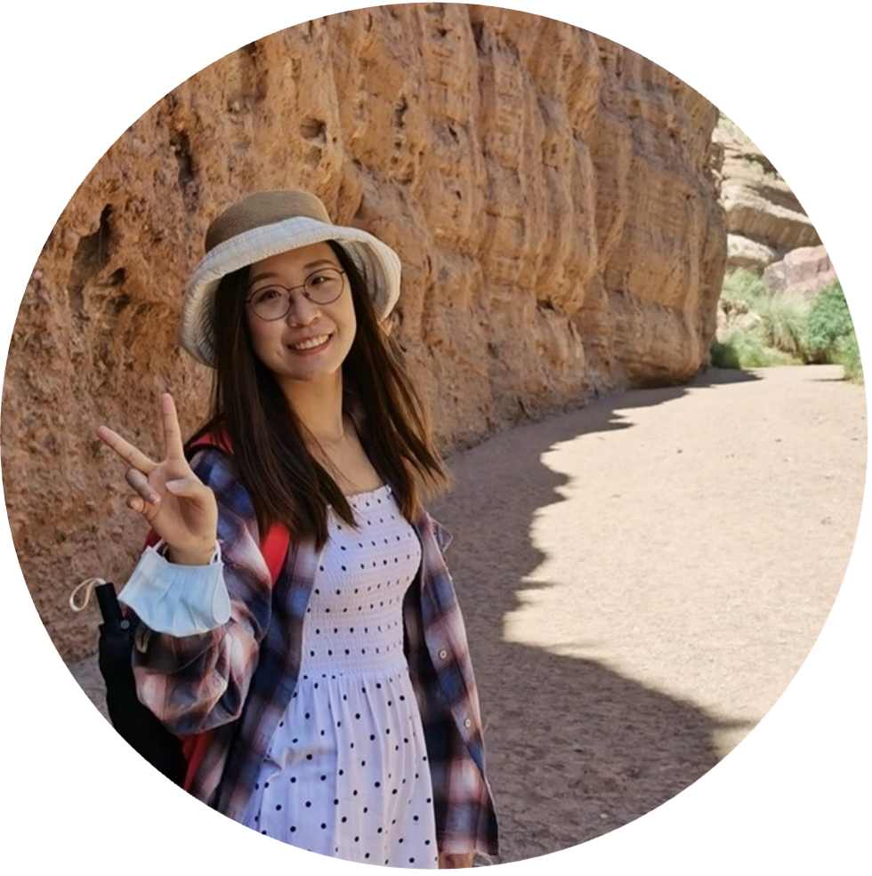

|
Yimeng Gu
I am a second-year Computer Science PhD student at Queen Mary University of London, where I am advised by Dr. Gareth Tyson and Dr. Ignacio Castro.
Prior to joining Queen Mary, I obtained my B.E. from Beihang University and my two M.S. from Carnegie Mellon University and The Hong Kong University of Science and Technology.
I work on natural language processing with an application in misinformation detection.
Email /
CV /
Google Scholar
|

|
|
News
April 2023: I will be interning at Autodesk Research this summmer!
March 2022: I ranked 16/69 in sub-task A of SemEval 2022 Task 5: Multimedia Automatic Misogyny Identification!
|
|
Research
I'm interested in the broad topic of natural language processing.
|
MMVAE at SemEval-2022 Task 5: A Multi-modal Multi-task VAE on Misogynous Meme Detection
Yimeng Gu,
Ignacio Castro,
Gareth Tyson
SemEval, 2022
[code]
[paper]
[video]
We propose a Multi-modal Multi-task Variational AutoEncoder (MMVAE) to learn an effective co-representation of visual and textual features of memes in the latent space, and determine if the meme contains misogynous information and identify its fine-grained categories.
|
Automating Claim Construction in Patent Applications: The CMUmine Dataset
Ozan Tonguz,
Yiwei Qin,
Yimeng Gu,
Hyun Hannah Moon
NLLP, 2021
[paper]
We first create a large dataset known as CMUmine™ and then demonstrate that, using NLP and ML techniques the claim construction process in patent applications can be automated.
|
|
Teaching
ECS765P Big Data Processing - Spring 2022 (TA)
|
|
Miscellaneous
In my spare time, I like playing tennis, badminton, ping-pong, basketball and working out. I like watching almost all kinds of sport games.
I'm also a museum lover, especially for natural history museums and museums related to humanity culture. Some cool museums I have been to: the Qsingdao Beer Museum, the BMW Vehicle museum.
|
Last update on Apr 16th, 2023. Template credits to Jon Barron.
|
|
{kind=link}